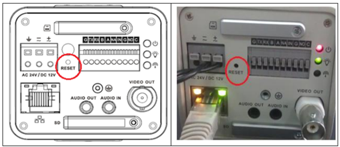

pepe
pepe
CAMARAS
en este apartado explicaramos como usar una camara de ip paso a paso
lista de articulos a usar
⋆switch 2 unidades
⋆camara/s
⋆cable/s de fibra optica
⋆cables de red
⋆modulo SFP 2 unidades(1 amarillo y otro celeste)
⋆fuente para las switch
como conectar la camara
en caso de que sea nueva la camara, busque la ip de la misma usando la marca y el modelo.
si no es nueva fijate si en la camara no tiene su ip anotada,en caso de que no este
consulte en internet con el modelo y marca sobre como reiniciar la camara
en la mayoria suele aver un Boton que dice "reset" en el panel de la camara cerca del poe
ya con la camara reseteada busca la ip por defecto

y antes que nada cambie la ip de su dispositivo por una mas cercana a la ip de la camara
y busca en el navegador su ip

de esta forma se conectan las camatas ip para su funcionamiento